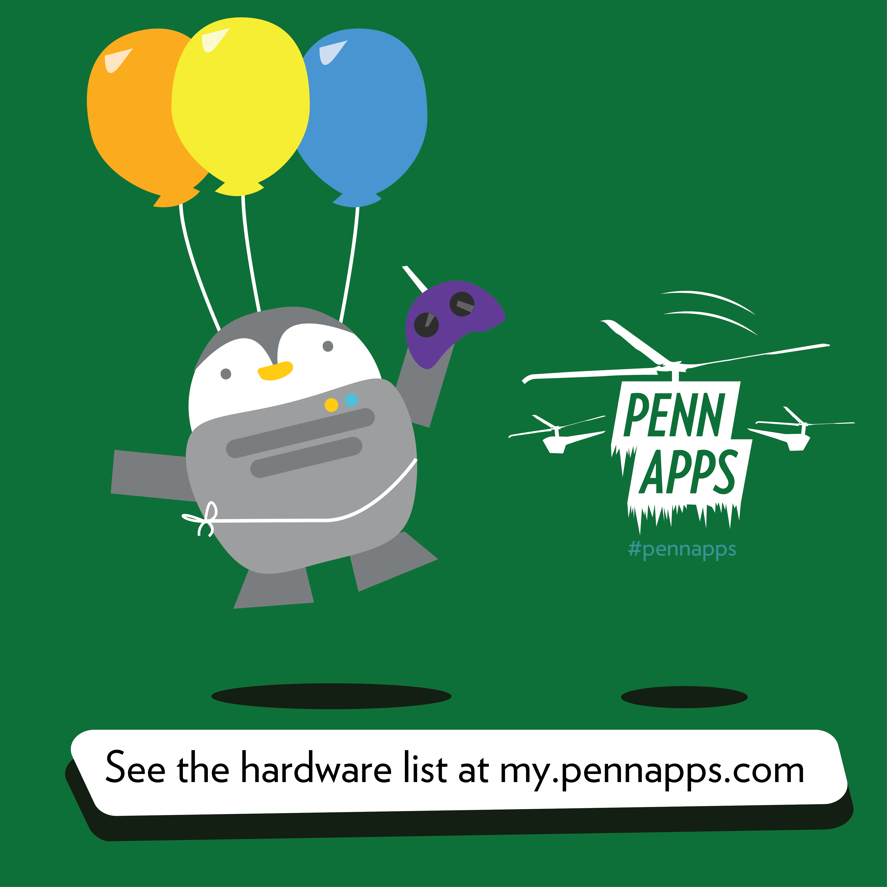

PennApps 2015
PennApps is a semesterly hackathon hosted at Penn. I created Pennjamin, the PennApps mascot, who ended up on all our social media releases and even got his own Facebook profile page.
#stuffaroundcampus


Phi Gamma Nu IFair 2015
Made a flyer for my business frat's signature student-run internship fair. I tried to make the design stand out in a crowd of papers when it was hung up in hallways around campus.
#stuffaroundcampus


ITASA East Coast Conference 2015
My marketing team leader was wonderful while planning for ITASA's annual conference. These are iteractions of my t-shirt design featuring a tech-savvy Taipei messaging Philadelphia. We also designed social media releases, helped run our IndieGogo Campaign, and scripted our promo video.
#stuffaroundcampus
Renewal College Fellowship
I've found a lot of friendship in Penn's Christian community, and joined a small group that calls itself team Whole in One. I Illustrator'd up this design with everyone's names in the center ring for a t-shirt and shared it with the group.
#stuffaroundcampus
Pan-Asian American Community House
A lot of times I like to hang around PAACH because it has nice couches and nice people and lots of tea, but once I got pulled into helping out with designing the anniversary brochure.
#stuffaroundcampus
PennApps 2015 (Bonus!)
The gigantic 7-foot poster to be hung outside during PennApps, featuring Ruby the photobombing whale.
#stuffaroundcampus


FNAR 123: Drawing I
Excerpts from my physical portfolio of traditional art things. I always had to dress like a burglar on art class days because staying clean == futility.
#traditional

WIP: Animations
Keeping a brave heart while teaching myself Adobe Flash.
#longggwaytogo
WIP: Game 10
Made ScrabbleTetris, complete with random compliment generator when you successfully spell a valid four-letter word. Could be expanded to help generate random words to inspire creative writing or to help learn vocabulary in new languages.
#gamedesign

A few unfortunates
An homage to my first few attempts at Illustrator plus a SPACE OCTOPUS as a symbol of the awesome things to come.
#projects